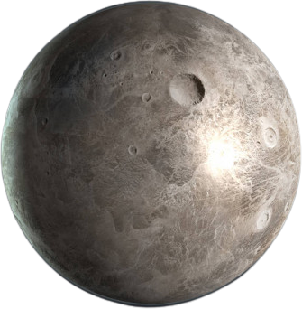

cérès

Céres, est la plus petite planète naine connue du Système solaire ainsi que le plus gros astéroïde de la ceinture principale ; c'est d'ailleurs la seule planète naine située dans la ceinture d'astéroïde. Elle a un diamètre d'environ 950 kilomètres et une masse qui représente environ le tiers de la masse totale de cette ceinture.